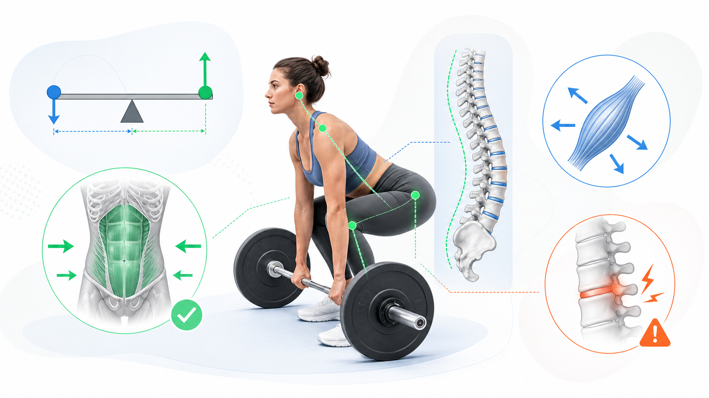
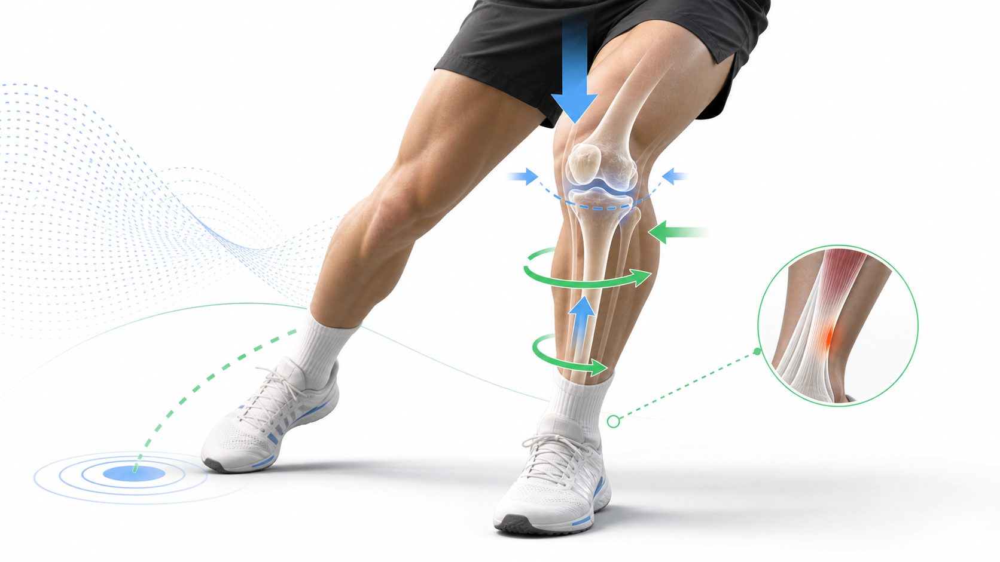
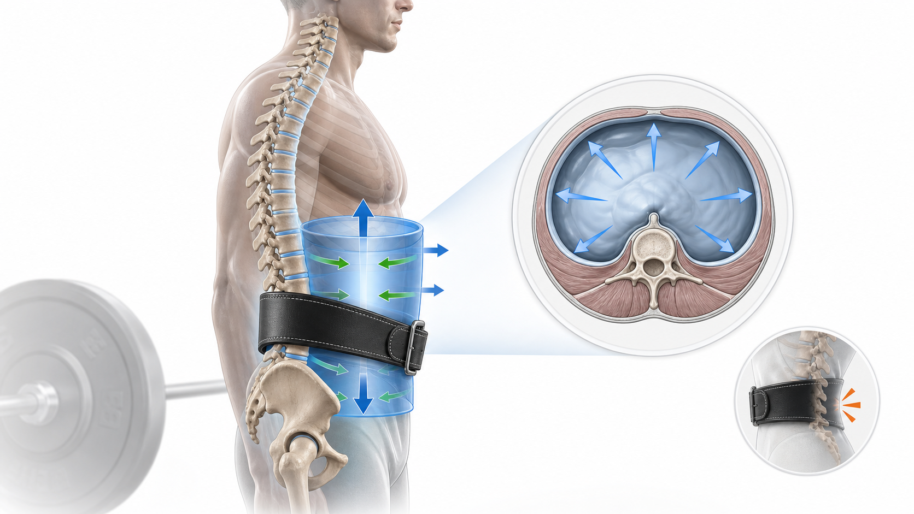
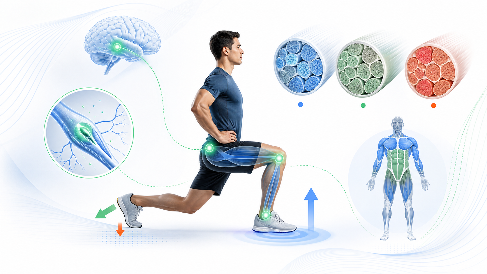

Day 21 · 第3周复盘-生物力学

第3周核心不是背散点，而是会串链: 外力先变成力矩，力矩落到动作模式，动作模式由脊柱和核心接住，最后由神经、肌肉和组织耐受决定能不能撑住。
做题或看动作时先问: 力臂在哪里，远端是否固定，脊柱是否稳定，力量来自神经还是肌肉横截面积，风险是单次峰值还是长期累计。
打开 Day21 原学习页 →
第3周核心不是背散点，而是会串链: 外力先变成力矩，力矩落到动作模式，动作模式由脊柱和核心接住，最后由神经、肌肉和组织耐受决定能不能撑住。
做题或看动作时先问: 力臂在哪里，远端是否固定，脊柱是否稳定，力量来自神经还是肌肉横截面积，风险是单次峰值还是长期累计。
打开 Day21 原学习页 →


今日新知识 Day21：用一句话串起“外力、力矩、动作模式、核心稳定、损伤风险”。
今日新知识 Day21：看到硬拉杠铃前飘，先想到哪个生物力学概念？
Day20：急性损伤和过度使用损伤，判断抓手分别是什么？
Day18：为什么硬拉强调中立脊柱和腹内压？
Day14：肌梭和 GTO 最容易混在哪里？
Day07：一个测试很稳定，是否一定有效？为什么？
Day21 综合：为什么“更重”不是训练进步的唯一标准？
Day20 + Day18：负重屈曲、疲劳和旋转叠加时，风险为什么会升高？
| 易错点 | 错因 | 修正句 |
|---|---|---|
| 只看重量，不看力臂 | 把外力大小等同动作难度。 | 同样重量，离关节越远，力矩越大。 |
| 把核心理解成腹肌酸 | 把核心训练等同卷腹。 | 核心主业是抗伸展、抗屈曲、抗旋转、抗侧屈。 |
| 把筛查当诊断 | 误解动作筛查作用。 | 筛查找代偿和风险线索，诊断还要临床评估。 |
| 把相关直接说成因果 | 忽略研究设计等级。 | 相关研究只能提示关系，因果需要更强实验设计支持。 |